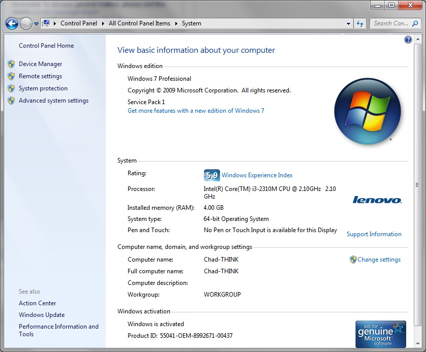
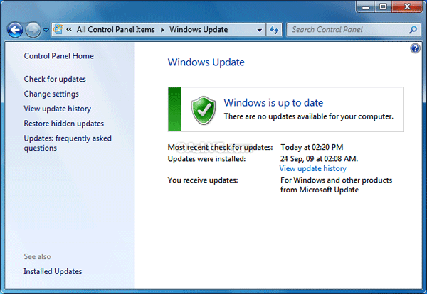

Impossibile accedere alla mail
Verificare la versione del Sistema Operativo che deve essere Windows 7 SP1

Se manca il SP1 provvedere all'installazione e riavviare la macchina.
Verificare che il sistema operativo sia aggiornato con gli ultimi aggiornamenti.

Applicare gli aggiornamenti trovati.